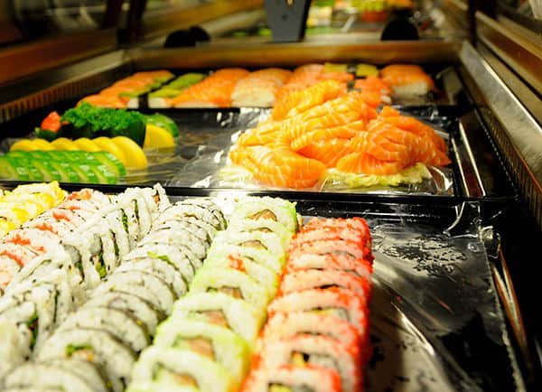
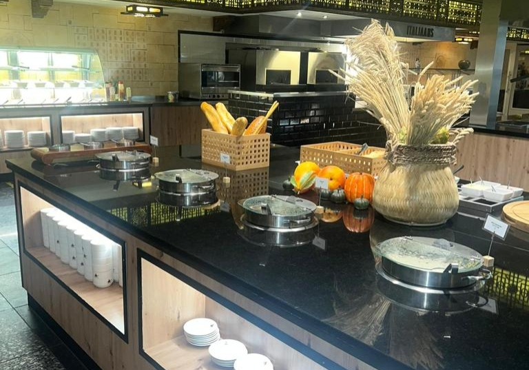

Het buffet
Een wereld van culinaire tradities, van klassieke Westerse gerechten tot de rijke en authentieke smaken uit Azië.
Voor de jongste gasten: snackcorner, poffertjes- en crêpestation, chocoladefontein, softijs en een speciale kinderhoek.